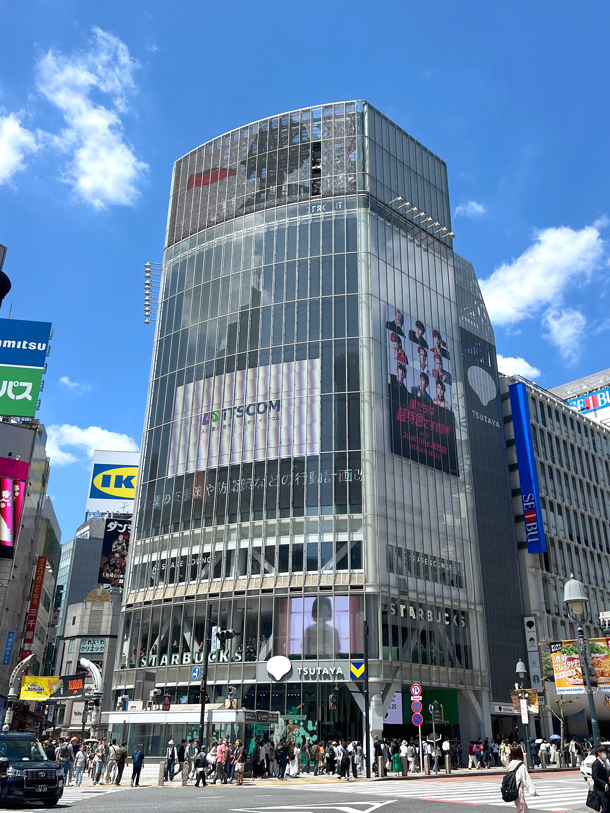
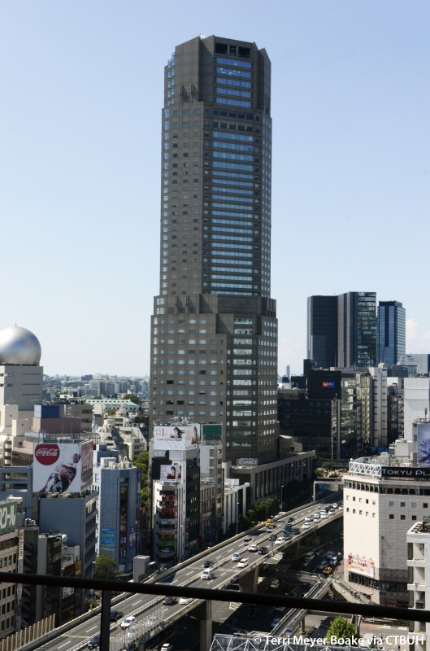
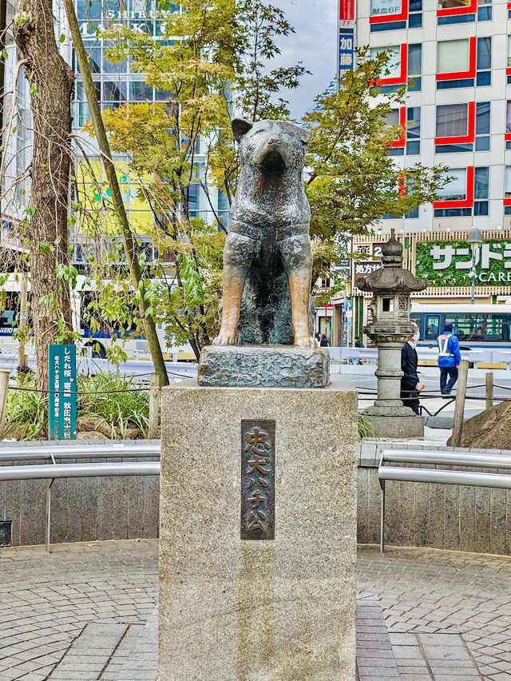
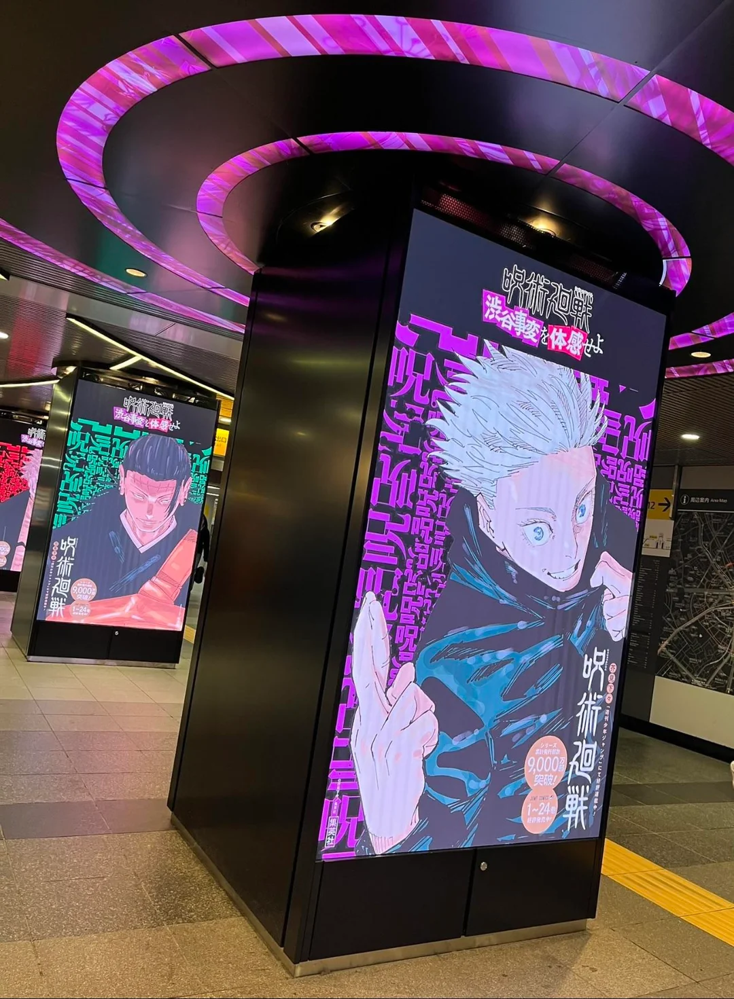

Sobre o aluno
Nome: Eduardo Rodrigues Silva
Turma: 2ºD
O lugar dos meus sonhos
Shibuya - Tóquio, Japão
Gosto da estética cheia de luzes, prédios e vários eventos acontecendo ao mesmo tempo, também gosto bastante de Jujutsu Kaisen e tem uma temporada que acontecem coisas nessa cidade...
Estética meio Cyberpunk.
O cenário urbano, como os prédios, luzes e o movimento de pessoas.
Quando chove deve ficar bem bonito.
É cheio de acessórios e produtos de animes e etc.
Curiosidades sobre esse lugar
- Conhecido como Shibuya Scramble Crossing, é o mais movimentado do mundo. Em horários de pico, estima-se que cerca de 1.000 a 2.500 pessoas atravessam a cada dois minutos, e cerca de 2,5 milhões de pessoas passam por lá diariamente.
- Localizada na saída da estação, a estátua homenageia o cão que esperou seu dono no mesmo local por 10 anos após sua morte, imortalizando a lealdade.
- "Shibuya" significa "vale" em japonês, e a estação de Shibuya fica, de fato, no fundo de um vale. Uma dica para não se perder é lembrar que todas as ruas próximas descem em direção à estação.
Animes favoritos
- Jujutsu Kaisen
- Chainsaw Man
- Hellsing
- DanDaDan
- Fullmetal Alchemist: Brotherhood
- Cowboy Bebop
- Yofukashi no Uta
- One Piece
- One Piece: Film Red
- Demon Slayer
- Demon Slayer: Infinity Castle
- My Hero Academia: Vigilantes
- Attack On Titan
- BNA: Brand New Animal
- Black Clover
- Komi-san wa, Komyushou desu
- JoJo's Bizarre Adventure - Parte 1: Phantom Blood
- JoJo's Bizarre Adventure - Parte 2: Battle Tendency
- JoJo's Bizarre Adventure - Parte 3: Stardust Crusaders
- JoJo's Bizarre Adventure - Parte 4: Diamond is Unbreakable
- JoJo's Bizarre Adventure - Parte 5: Golden Wind
- JoJo's Bizarre Adventure - Parte 6: Stone Ocean
- JoJo's Bizarre Adventure - Parte 7: Steel Ball Run
- JoJo's Bizarre Adventure - Parte 8: JoJolion
- JoJo's Bizarre Adventure - Parte 9: The JoJoLands
Galeria de imagens sobre o lugar que eu quero visitar




